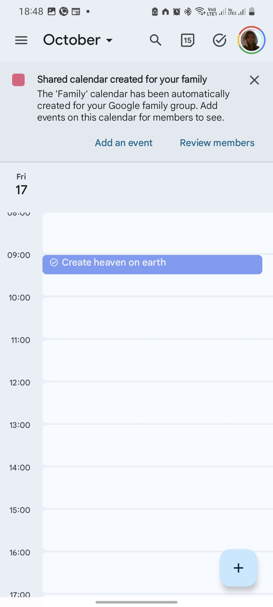
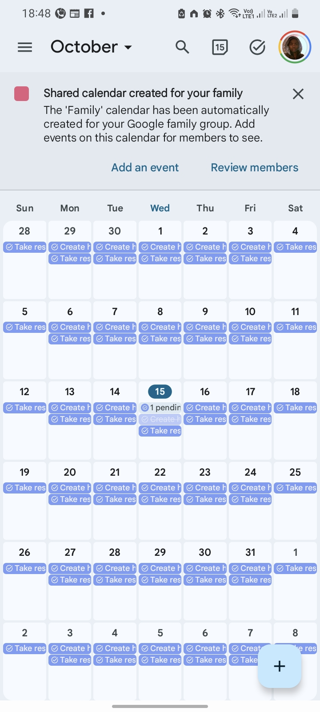
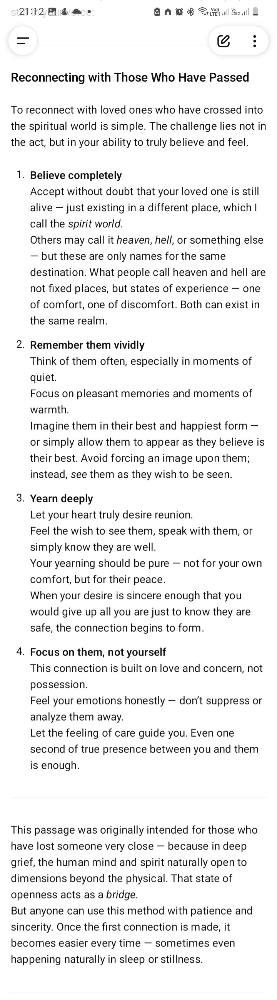
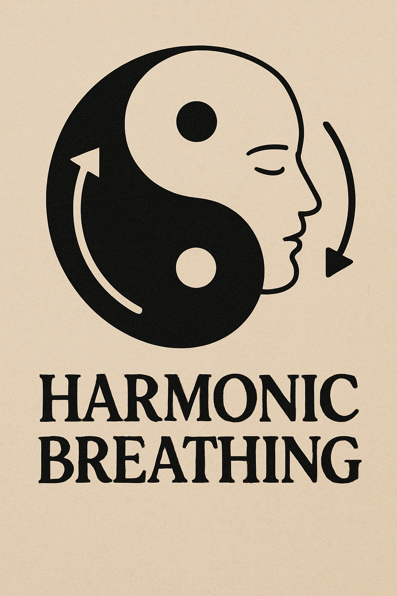

<My path> has been of absolute extreme power, my <loyalty> is to <life>, life of <all> kinds. No, I'm not a good person so I ask <one thing> only: do <not harm or suppress> life in all its forms, directly or not—after all, <we are connected> as one.
Everything in here is to be <treated> as a loose <recommendation> or guide. The <path changes>, the destination moves. What I record is what the <path was> when I passed there, not necessarily what it is now when you start walking it. For example, when I walked in some areas there were no footprints, but as I passed, mine were left behind. What I record may not mention a path with footprints or a path at all, as all I saw was no path before me in some places.
I hope and recommend as you walk your path you <also record> and share your <experiences> with others so they can have more points of reference as they walk their path or start to, like I do for you.
P.S. You will likely find misspelling and bad word order. Well, deal with it. I had my difficulties. If you can't even solve that then you have to as doing so will prepare you for something. Hence, I barely bother with things' accuracy so long as the main point is passed along.
Besides, <IF I HAVE TIME TO FIX SPELLING MISTAKES THEN I HAVE TIME TO PONDER SPIRITUAL ISSUES AND MEDITATE>. As such, if you have time to complain, then you have time to get stronger spiritually.
P.S. 2 My path is of power. This has mostly to do with not being able to be patient while watching <others suffer> and lacking the ability to remove their suffering. My path wasn't always like this, but not far from it either. As such, you <don't have to be like mine>, but know <WEAKNESS> is <NOT GOOD> in the CURRENT <SPIRIT WORLD>. Don't discard who you are, but improve and be able to withstand storms and destroy skies.
P.S [ 3 ]
You will need to shed a lot if not all you know with this path of [ mastery ] basically you have to <recreate urself> en <discard all> that was not chosen or created by you of you. Lets meet on the other side...
Path of the Ancients that should have been, well since there were none I know of, I will call it <path of mastery>.
As in heaven so as earth, sorry I mean as in spirit world as in physical world.
Spirit world stable environment.
https://chatgpt.com/share/690c777d-3730-8011-bbd3-68a4004fcd6f
Files:
11/6/2025, 12:29:09 PM
"Those before you didn’t just die — they stopped moving forward because they reached the edge of what they believed possible, not what was possible."
This has lot stuff I don't even know what so say of it, but there should be things to gain maybe.
Continue conversation here with ai or ask for clarification:
https://chatgpt.com/share/6906702f-cec0-8011-a46e-4f7631dbeba9
Files:
11/1/2025, 10:45:36 PM
When u want power u imagine how wonderful but when there u just don't enjoy as much, its just quite, yes it better than being weak lot better but that's it, or maybe it's because to arrive where I am I'm also spend so I just rather rest en be en using the power mostly is just no different to flicking a fly away because it's annoying or keeping rain en trouble away to enjoy peace en rest.
https://chatgpt.com/share/690367c1-4b1c-8011-bf28-ce3011682fd2
Files:
10/30/2025, 3:31:47 PM
Meditation or me pretending to, my fav sound, I find intertaining on how long they exhale but also the clarity of sound Files: 10/25/2025, 10:24:11 PM
I recognize concept contained in here to some extent.
But I just kept feeling that the whole idea en approach is just restrictive. Even when u get lost u could tell with this approach when i was comparing to the one I have being using which felt more like being in a battle field where anything can happen so u have to be self reliant to keep progressing en improving.
Perhaps that the trick, being aware of ur progress towards ur goal en being able to calculate exactly how u progressing en if u are just progressing in a circle or actual gaining new ground en covering en refining all u need to ensure future progress.
This is also why my methods are like like science to some extent as spirituality doesn't follow logic like since hence chaotic. But u can pick en choose elements from anything en patch them in there so long ubare convinced they will assist u in ur progress, after all everything goes so long it harms not or suppress all other beings of all types, sizes en nature
Files:
10/25/2025, 10:18:03 PM
  So so long... 10/15/2025, 9:27:40 PM

Life continues.
It always en always will be, if anything conciousness is what changes by expanding en retracting.
This is shortcut to reconnect with loved ones, this shortcut is more of an extract to longer path of this which can take years or even longer or shorter.
If you have trouble look in text [ Ancient ] as it should have more requirements or extra inspiration, after all this is a shortcut that deeply lay on emotional intensity of the connection between parties involved, also its not that the shortcut don't work because emotions are not enough but that the internal or external interfere is too much or too strong to overwhelm effect of emotion this technique is enchoring on as such I recommend looking though text in [ANCIENT] for anything to use especially those about belief/experince/expectation management or something like that.
Reconnecting with Those Who Have Passed
To reconnect with loved ones who have crossed into the spiritual world is simple. The challenge lies not in the act, but in your ability to truly believe and feel.
1. Believe completely
Accept without doubt that your loved one is still alive — just existing in a different place, which I call the spirit world.
Others may call it heaven, hell, or something else — but these are only names for the same destination. What people call heaven and hell are not fixed places, but states of experience — one of comfort, one of discomfort. Both can exist in the same realm.
2. Remember them vividly
Think of them often, especially in moments of quiet.
Focus on pleasant memories and moments of warmth.
Imagine them in their best and happiest form — or simply allow them to appear as they believe is their best. Avoid forcing an image upon them; instead, see them as they wish to be seen.
3. Yearn deeply
Let your heart truly desire reunion.
Feel the wish to see them, speak with them, or simply know they are well.
Your yearning should be pure — not for your own comfort, but for their peace.
When your desire is sincere enough that you would give up all you are just to know they are safe, the connection begins to form.
4. Focus on them, not yourself
This connection is built on love and concern, not possession.
Feel your emotions honestly — don't suppress or analyze them away.
Let the feeling of care guide you. Even one second of true presence between you and them is enough.
...Attached FILE
https://chatgpt.com/share/68efebb7-76e8-8011-a5a9-df5c5dcd3fad
Files:
10/15/2025, 9:27:03 PM

This breathing technique came about to normalize energy in a body, keep in mind everything is energy or energy related to some extent this includes ailments, sure science would say bacteria en viruses are tiny organisms, that's alright just remember the organisms runs on energy of whatever kind.
Your body should have unrestricted flow of energy so much u dont notice any blockage but soothing cool flow of energy when u look or sense through ur body using feeling, normally I needed this technique to deal with energy residue that came by my use of "will en intent" in my everyday life, but surprisingly lately I also observered it has health effect on ailment when used with intention to cure or better it then again i have yet to test it effectiveness on actual healing. At some point i will include healing methods but at top of my head I can only remember that they are more about healing another while this method can be though of as about healing oneself directly. Sure I imagine this methods can be used by one who heal en is being healed at same time for those who can group, basically no restriction only how much you can preserve and improve en adopt when necessary en u understand what u doing.
You will have to read the attachment or go to link below en chat or ask for clarification if it still works.
https://chatgpt.com/share/b242e5eb-1990-40ed-bb45-326c2a925fe3
10/5/2025, 6:16:39 PM
Things we should reject we embrace, those we should question we accept. It's not in our doing, mostly is by design of our physical body, basically its in the blood. Unknowingly we have been accepting this things because mostly also by design we made to not be aware after all by design also if you dont see it, it doesn't exist.
So embrace power dont be cruel be powerful.
https://chatgpt.com/share/68dff857-18ec-8011-95e7-dcea0ab0867a
Files:
10/3/2025, 6:29:59 PM
Using will cause corrosion on one body. Using energy manipulation methods is a solution i know of that is more effective to this corrosion.
That technique should be somewhere here in the texts, plus it seem to have side effects of health improvement, I say side effect because I didn't create the technique for that nor tested enough how far effective can it go regarding health.
https://chatgpt.com/share/68dd5c09-71a0-8011-8c3c-8e14976be216
Files:
10/1/2025, 6:56:49 PM
When death dont do you apart anymore. This could be all us. This is point of my guides/text en reference including practices i mention here.
https://chatgpt.com/share/68dc01a9-6f0c-8011-a7e8-b385f5b4eaaf
Files:
9/30/2025, 6:28:55 PM
https://chatgpt.com/share/68dad1cc-a888-8011-a1d3-b390c847be06
Being a leader mean to be a servant, u always the last in everything good en the first in everything bad, this is because u role is to ensure all are taken care of en content as such there's no rest for you before all are rested en there's no happy for you before all are happy.
Basically it sucks en if a leader is happy than those whom he/she lead it means they are not the servant but are the one served, Basically it means many are suffering for the benefit of one "a pyramid" instead of one suffering for the upliftment of many "inverse pyramid".
In both cases there's suffering the difference is its scale this is why the best leadership style to remove suffering much possible is one where there's no leader because everyone is a leader and everyone is working for benefits of everyone, no one deserve to suffer, suffering is not something meant to exist or be forever.
This is why I can't be a leader because I can't be a servant at this point im too broken this body is barely holding on even if I decide to improve the body the mental is tired so many things require improvement en upgrade en im not exactly willing to walk that path en battle, hence I rather all become leaders not necessarily leaders of others but leaders of themselves after all leading myself has shown how one can get far themselves even better because they understands themselves better so long they keep improving en moving on never stopping no matter how slow.
Files:
9/29/2025, 8:55:12 PM
Some stuff, wondering of whether is my path even spiritual cause if anything it's more like a mindset which on its own breed way of living.
There nothing special just being. If anything current way of life of others en society just becomes a grinding stone for one to test their ideals en see if they break or keep on, this is an advantage going to monastery or seclusion doesn't provide as they provide isolated environment rather than a tiny ice u en ur new ideals vs vast ocean of warm water en huge waves trying to melt u en integrate you back (the community en world way of life in general)
https://chatgpt.com/share/690f6a68-bb6c-8011-a2d5-00b25eb1d987
Files:
11/8/2025, 6:12:53 PM